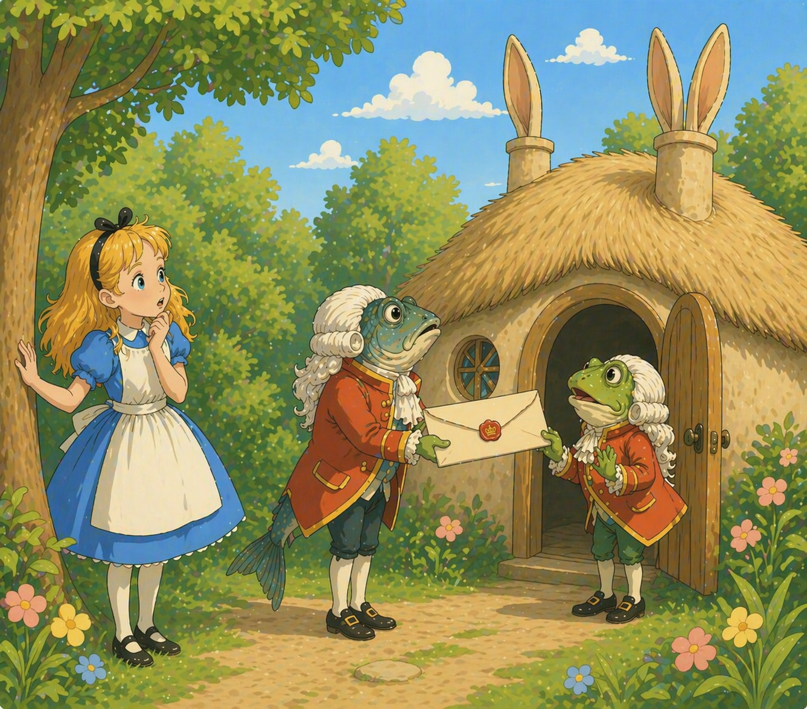
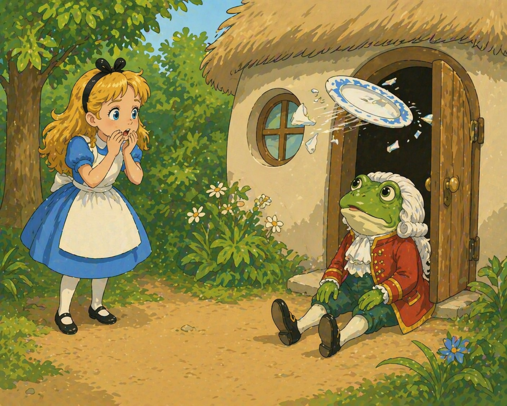
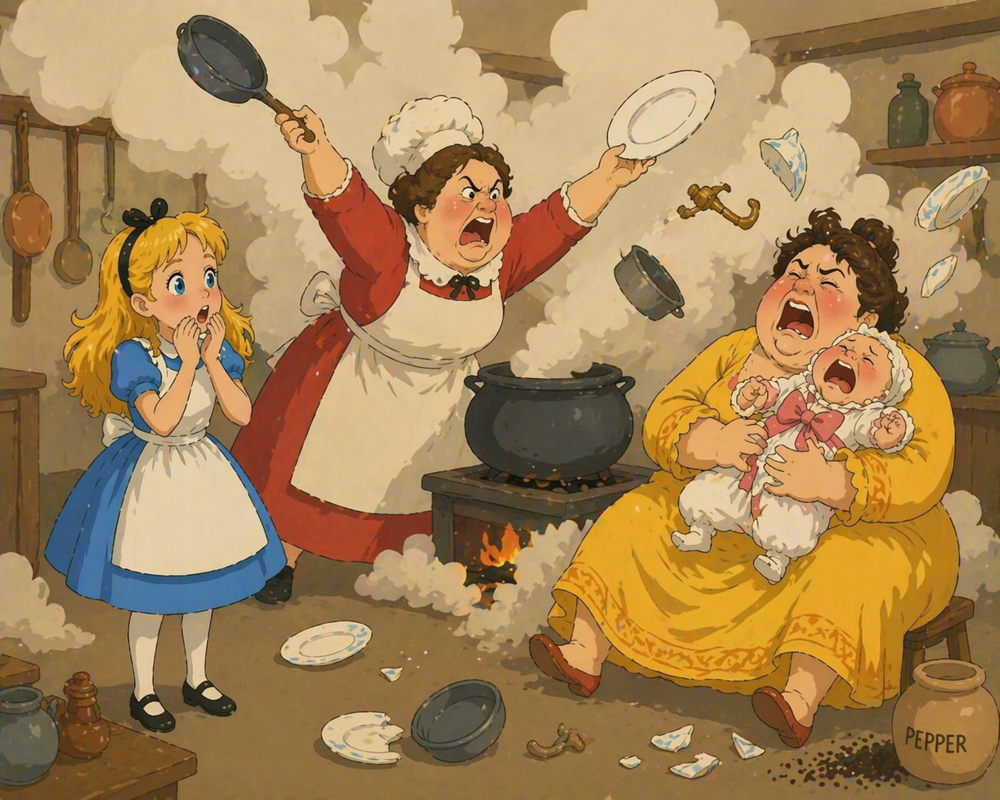
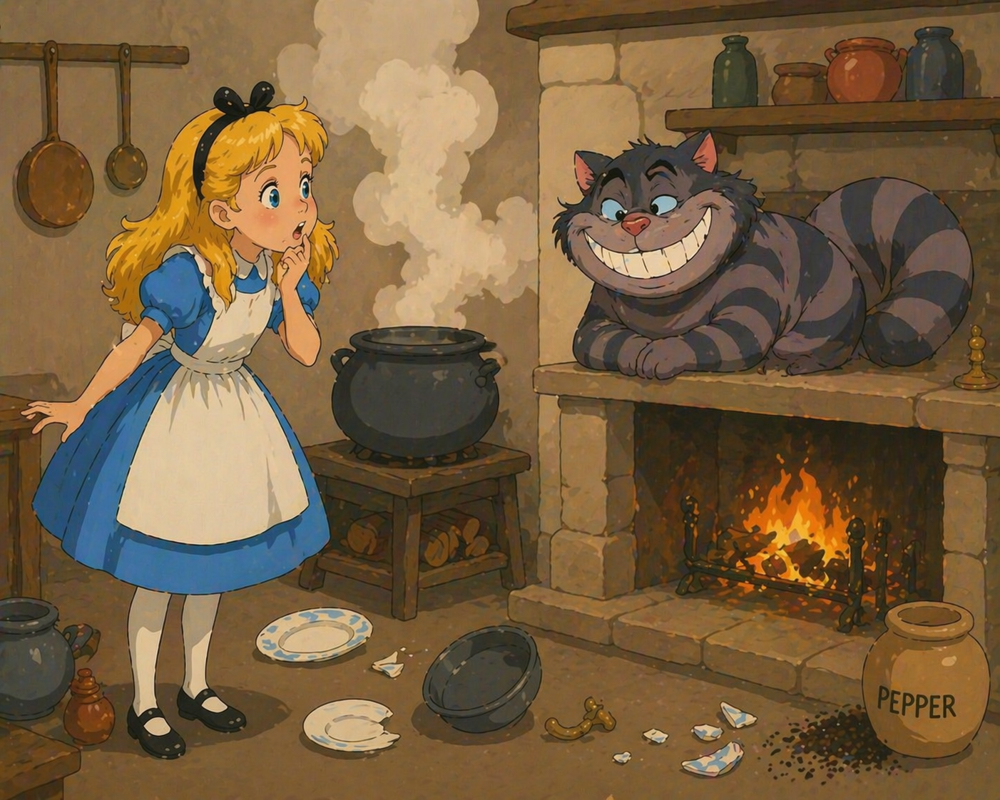
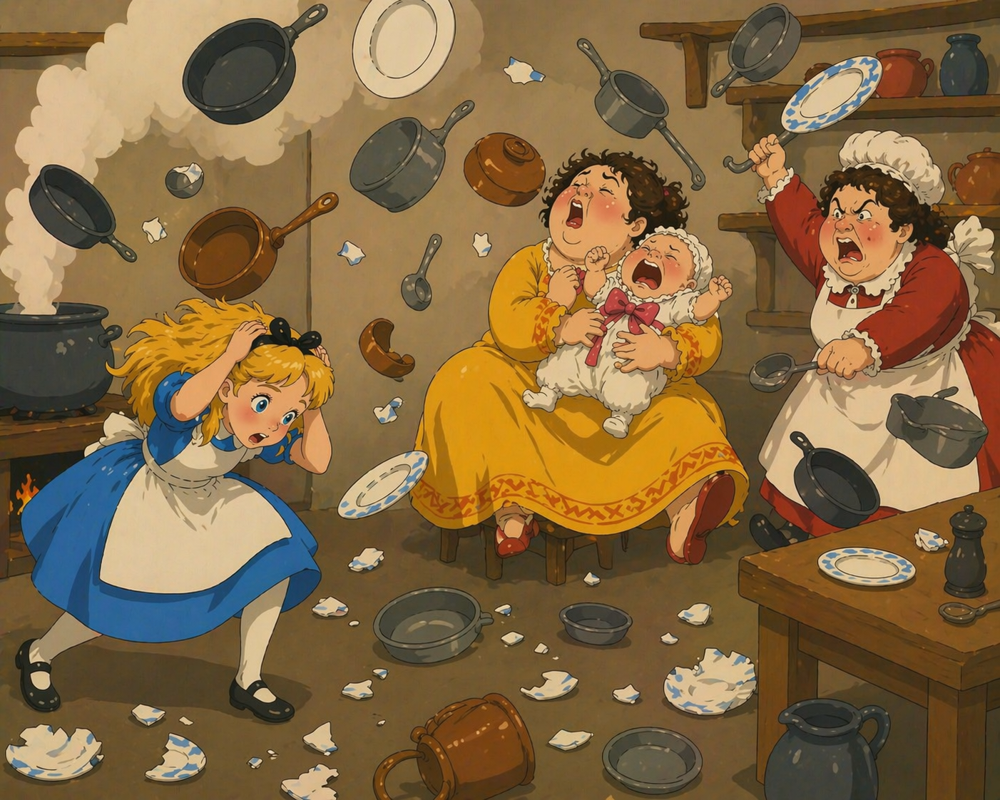
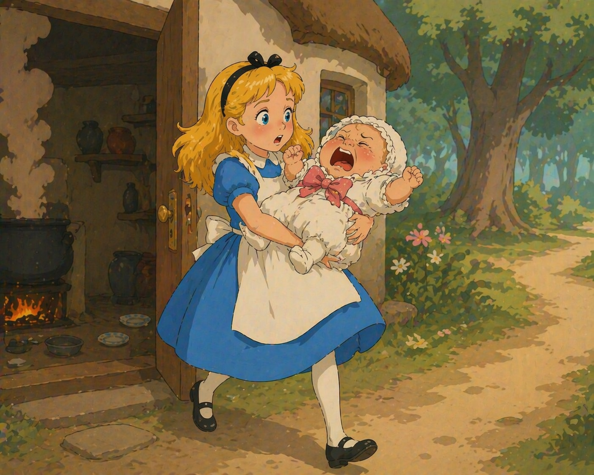
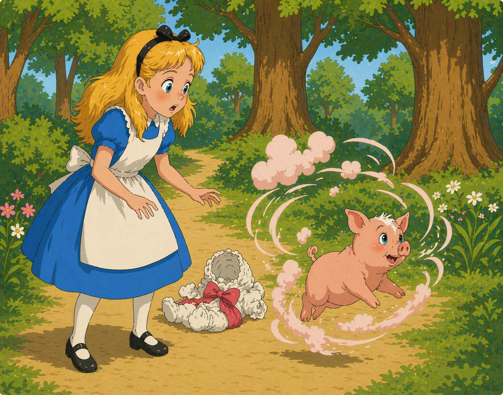
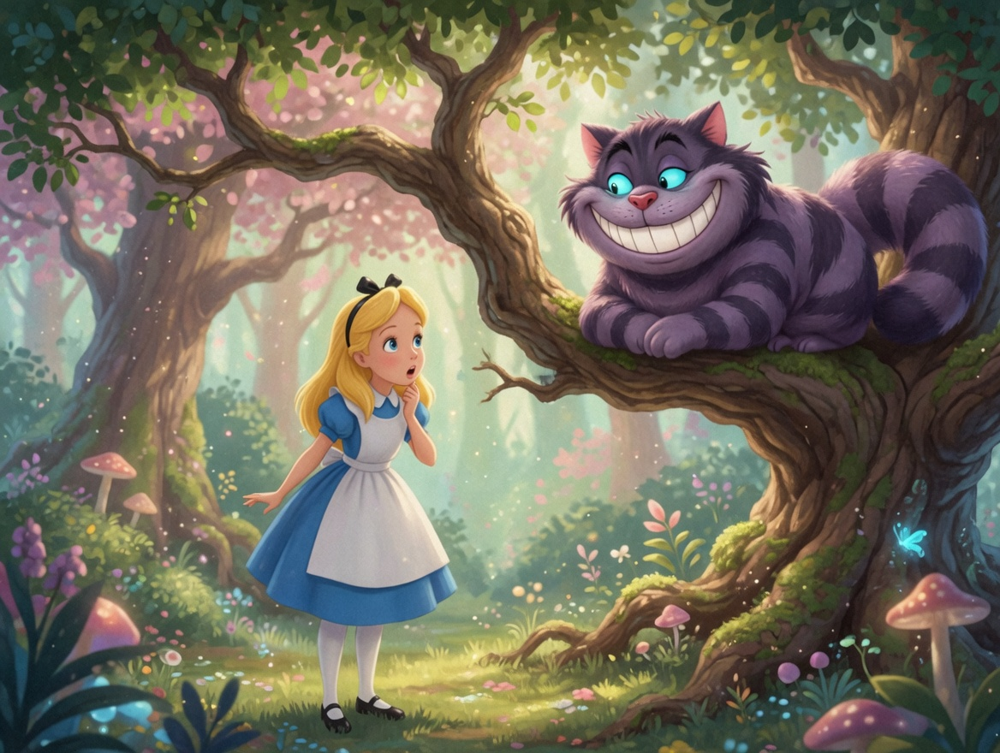
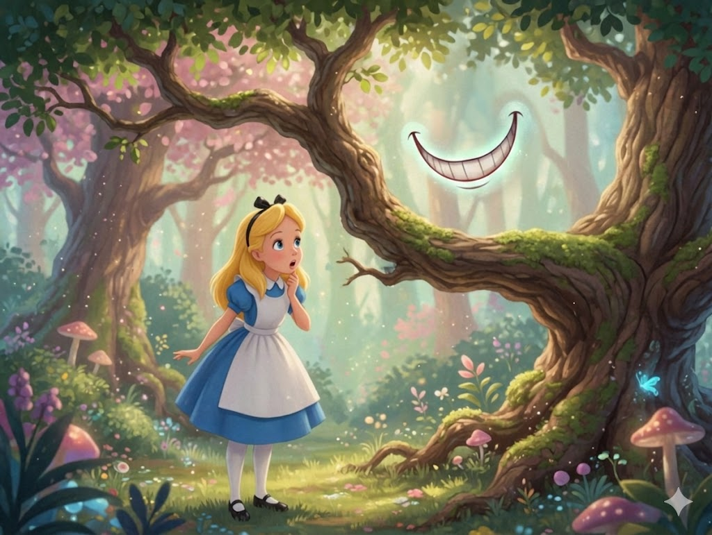

Rozdział VI - PROSIĘ I PIEPRZ
🎧 Слушай главу
Alicja stała przez chwilę przed domem i zastanawiała się, co dalej robić, kiedy nagle wypad! z lasu lokaj w liberii (sądząc z twarzy była to po prostu ryba) i z całej siły zastukał do drzwi. Otworzył mu inny lokaj w liberii, o okrągłej twarzy i wyłupiastych oczach żaby. Alicja zauważyła, że obaj służący nosili białe pudrowane peruki, opadające im w lokach na ramiona. Zaciekawiona, podeszła bardzo blisko, aby usłyszeć ich rozmowę.

Lokaj-Ryba wyjął spod pachy olbrzymi, większy od siebie list, po czym wręczył go swemu koledze oznajmiając uroczyście: „Dla Księżnej. Zaproszenie od Królowej na partię krokieta”. Lokaj-Żaba powtórzył tym samym uroczystym tonem, zmieniając tylko porządek słów: „Od Królowe!. Zaproszenie dla Księżnej na partię krokieta”.
Następnie złożyli sobie niskie ukłony i przy tej okazji poplątały się ze sobą loki ich peruk.
Wypadek ten tak ubawił Alicję, że musiała ukryć się w lesie, żeby lokaje nie usłyszeli jej śmiechu. Kiedy wyjrzała na nowo, Lokaja-Ryby już nie było, Lokaj-Żaba zaś siedział na ziemi przed domkiem wpatrzony w niebo z wybitnie głupkowatym wyrazem twarzy. Alicja podeszła nieśmiało do drzwi i zastukała.
– Szkoda czasu na stukanie – rzekł Lokaj-Żaba – a to z dwóch przyczyn. Po pierwsze – ja znajduję się po tej samej stronie drzwi, co i ty, Po drugie zaś, oni hałasują tak okropnie, że nie mogą usłyszeć twego dobijania się.
Istotnie, z domku dobiegał jakiś wyjątkowo przykry i dziwny hałas. Było to coś w rodzaju nieprzerwanego wrzasku i kichania, urozmaiconego od czasu do czasu brzękiem szklą tłuczonego w drobne kawałeczki.
– Bardzo przepraszam – rzekła Alicja – ale w takim razie w jaki sposób dostanę się tam do środka?
– Twoje stukanie miałoby być może, jakiś sens – ciągnął dalej Lokaj-Żaba, nie zwracając uwagi na pytanie Alicji – gdyby pomiędzy nami znajdowały się drzwi. Na przykład, gdybyś ty była w środku, mogłabyś zastukać, a ja wypuściłbym cię na dwór. – Mówiąc to lokaj gapił się cały czas w niebo, co Alicja uznała za wyjątkową nieuprzejmość.
„Może nie ma w tym jego winy – powiedziała do siebie. – Jego oczy położone są tak blisko czubka głowy. Ale w każdym razie mógłby chociaż odpowiadać na pytania”.
– Więc jak ja się w końcu tam dostanę? – zapytała na głos, zwracając się do służącego.
– Będę siedział tutaj aż do jutra – odpowiedział lokaj głosem zdradzającym znudzenie. – Do jutra albo…
W tej samej chwili drzwi otworzyły się i duży talerz wyleciał przez nie prosto na głowę lokaja. Lokaj uchylił się jednak w samą porę, tak że naczynie zawadziło tylko lekko o jego nos i rozbiło się w kawałeczki o pobliskie drzewo.

– …albo jeszcze dłużej – rzekł Lokaj-Żaba kończąc przerwane zdanie tak, jak gdyby nic się nie zdarzyło.
– Ale jak ja się dostanę do środka? – zapytała Alicja głośniej niż poprzednio i znacznie mniej uprzejmie
– A czy ty w ogóle powinnaś wejść do środka? – zapytał z naciskiem lokaj. - Od tego, widzisz, właściwie wszystko się zaczyna.
Lokaj miał niewątpliwie rację. Ale rozmowa ta dawno już przestała bawić Alicję. „To jest doprawdy nie do wytrzymania – rzekła do siebie. – Te stworzenia są wprost nieprzyzwoicie kłótliwe. Można dostać bzika od tego ustawicznego użerania się”
– Będę siedział tutaj bez chwili przerwy całymi dniami – rzekł nagle lokaj, uważając widać za stosowne przypomnieć Alicji swą niedawną uwagę.
– Dobrze, ale co ja mam zrobić? – zapytała Alicja.
– Rób, co ci się żywnie podoba – odpowiedział Lokaj-Żaba i zaczął gwizdać.
„Szkoda czasu na rozmowę z nim – pomyślała Alicja z rozpaczą. – To jest skończony dureń”. Po czym otworzyła drzwi i weszła do środka.
Drzwi prowadziły do straszliwie zadymionej kuchni. Księżna siedziała pośrodku na stoiku o trzech nogach, piastując dziecko. Nad paleniskiem pochyliła się Kucharka, mieszając zupę w wielkim rondlu.

„Stanowcze musi być za dużo pieprzu w tej zupie” powstrzymując się od kichania.
W powietrzu unosiło się również zbyt wiele tej przyprawy. Nawet Księżna kichała od czasu do czasu, dziecko zaś na zmianę kichało i wrzeszczało bez wytchnienia. Jedynymi istotami uodpornionymi na tę ilość pieprzu w atmosferze byli: Kucharka oraz wielki kot, który siedział przy kuchni i uśmiechał się od ucha do ucha.
– Czy nie zechciałaby mnie pani poinformować – odezwała się Alicja trwożliwym głosikiem, nie była bowiem pewna, czy powinna odzywać się nie pytana – czy nie zechciałaby mnie pani poinformować, dlaczego ten kot tak dziwacznie się uśmiecha?

–To jest Kot-Dziwak rodem z Cheshire – odpowiedziała Księżna – i w tym tkwi cała przyczyna. Prosię!
Ostatnie słowo Księżny padło tak nagle i gwałtownie, że Alicja aż podskoczyła z przerażenia. Po chwili jedn
Po chwili jednak zorientowała się, że słowo „prosię” było skierowane do niemowlęcia nabrała więc znowu odwagi i rzekła:
– Nie sądziłam, że koty-dziwaki tak się uśmiechają. Nie przypuszczałam, że koty w ogóle umieją się uśmiechać.
– Umieją doskonale – odparła Księżna. – I większość z nich uśmiecha się.
– Nie widziałam nigdy przedtem uśmiechającego się kota – rzekła Alicja, zadowolona z nawiązania rozmowy.
– W ogóle mało jeszcze widziałaś – odpowiedziała Księżna. – I w tym tkwi sedno rzeczy.
Alicji nie podobał się ani trochę ton tej odpowiedzi, uważała więc, że warto by zmienić temat rozmowy. Kiedy zastanawiała się nad wyborem nowego tematu, Kucharka zdjęła z ognia gar z zupą i naraz jęła ciskać w Księżnę i dziecko wszystkim, co tylko miała pod ręką. Najpierw poleciała dusza od żelazka, a potem istny grad patelni, talerzy i odważników. Księżna nie zwracała na to najmniejszej uwagi, nawet kiedy pociski dochodziły celu. Jeśli idzie o dziecko, to darło się ono już przedtem tak głośno, że trudno było ustalić, czy trafiały je miotane przez Kucharkę pociski,

– Proszę uważać, na miłość boską! – krzyknęła Alicja uchylając się z przerażeniem na wszystkie strony. – Och, mój nos! – usunęła głowę w samą porę, aby nie oberwać patelnią szczególnie pokaźnych rozmiarów.
– Gdyby wszyscy zajmowali się tylko swoimi własnymi sprawimy ziemia obracałaby się z pewnością szybciej niż się obraca – zachrypiała filozoficznie Księżna.
– Co nie byłoby wcale pożądane – rzekła Alicja, rada, że może popisać się swymi wiadomościami. – Niech pani tylko pomyśli, co za zamieszanie wynikłoby ze sprawą dnia i nocy! Bo ziemia, wie pani, potrzebuje dwudziestu czterech godzin na pełny obrót dokoła swej osi. A najważniejsza rzecz to pory roku…
– Skoro już mowa o toporach - przerwała Księżna – to zetnij ej natychmiast głowę!
Alicja zerknęła z przestrachem na Kucharkę, aby przekonać się, czy nie bierze ona na serio ostatniej uwagi Księżny Ale Kucharka mieszała nadal zupę i zdawała się nie zwracać na całą tę rozmowę najmniejszej uwagi Alicja więc ciągnęła dalej:
– Najważniejsza rzecz to pory roku. Zaraz, zaraz: czy jest ich cztery, czy pięć? Zdaje się, że…
– Nie zawracaj mi głowy – przerwała Księżna. – Nie miałam nigdy pamięci do cyfr – po czym zaczęła kołysać swe dziecko w takt dziwacznej kołysanki, potrząsając nim gwałtownie pod koniec każdej zwrotki:
Śpij, syneczku, już,
Pieprz do noska włóż.
Kichać ani mi się waż,
Bo od tego brzydnie twarz.
Chórem:
(wraz z Kucharką i dzieckiem)
Apsik, apsik, apsik!
Śpiewając drugą zwrotkę Księżna podrzucała wysoko w górę swe niemowlę, które krzyczało tak głośno, iż Alicja ledwie rozróżniała słowa kołysanki:
Już, syneczku, śpij,
Bo złapię za kij!
Pójdziesz tam, gdzie rośnie pieprz,
Bowiem buzię masz jak wieprz!
Chórem
Apsik, apsik, apsik!
– Masz! Możesz poniańczyć je trochę, jeśli chcesz! – krzyknęła Księżna do Alicji rzucając jej niespodzianie dziecko. – Ja muszę przyszykować się do partii krokieta u Królowej. – To rzekłszy wybiegła z pokoju, a w ślad za nią poleciała rzucona przez Kucharkę patelnia, która jednakże chybiła celu.

Alicja pochwyciła z trudem niemowlę, jako że było to stworzenie o przedziwnym kształcie, z wyrastającymi na wszystkie strony kończynami. Alicja pomyślała, że przypomina ono nieco rozgwiazdę. Dziecko sapało niby lokomotywa i prężyło się tak raptownie, że Alicja miała w pierwszej chwili niemało kłopotu z utrzymaniem go na rękach.
W końcu poradziła sobie jednak z tym kłopotem. (Metoda jej polegała na związaniu niemowlęcia w rodzaj węzła i trzymaniu go za ucho i lewą nóżkę tak, żeby się samo nie mogło uwolnić). Po czym wyszła wraz z maleństwem na dwór. „Jeżeli nie zabiorę ze sobą tego dziecka, to zostanie ono z pewnością w bardzo krótkim czasie uśmiercone”.
– Czy pozostawienie go tutaj nie równałoby się morderstwu? – Ostatnie pytanie wypowiedziała na głos.
Dziecko przestało jakoś na chwilę sapać i tylko chrząknęło w odpowiedzi. – Nie chrząkaj – rzekła na to Alicja – bo nie jest to dla ciebie odpowiedni sposób wyrażania się.
Na to dziecko chrząknęło ze zdwojoną siłą, tak że Alicja spojrzała na jego twarzyczkę mocno zaniepokojona, czy nic mu nie dolega. Niewątpliwie, miało ono bardzo zadarty nosek, przypominający raczej ryjek niż zwykły nos; także jego oczka były wyjątkowo maleńkie i trzeba szczerze przyznać, że całość bynajmniej nie podobała się Alicji. „A może ono tylko tak płacze” – pomyślała i ponownie spojrzała w oczy niemowlęcia, aby przekonać się, czy nie są pełne łez.
Ale Alicja nie zauważyła ani śladu łez oczach dziwacznego maleństwa.
– Jeśli masz zamiar zmienić się w prosię, to wiedz, kochanie, że nie chcę mieć z tobą nic do czynienia – rzekła surowym tonem. – Miej się na baczności!
Maleństwo zaszlochało jedynie w odpowiedzi (a może chrząknęło, trudno to było ustalić i zamilkło na chwilę.
Alicja zastanawiała się właśnie, co zrobi z dzieckiem po powrocie do domu, kiedy nagle chrząknęło ono tak gwałtownie, że spojrzała na nie z prawdziwym przerażeniem. Tym razem nie ulegało już wątpliwości, że było to po prostu zwykłe prosię i że dalsze noszenie stworzonka pozbawione jest sensu.

Alicja postawiła więc prosię na ziemi i odczuła niemałą ulgę, kiedy pobiegło spokojnym truchcikiem do lasu.
„Gdyby trochę jeszcze podrosło – pomyślała Alicja – zrobiłoby się z niego wyjątkowo paskudne dziecko. Ale trzeba przyznać, że jako prosię jest raczej przystojne”.
Tu przypomniała sobie znajome dzieci, które z powodzeniem mogły uchodzić za prosięta, kiedy nagle ze zdumieniem ujrzała na jednym z pobliskich drzew Kota- Dziwaka.
Na widok Alicji Kot uśmiechnął się swym zwyczajem od ucha do ucha.
„Wygląda raczej dobrodusznie – pomyślała Alicja – ale ma jednak bardzo długie pazury i całe mnóstwo zębów, trzeba więc traktować go uprzejmie”.

– Drogi panie Kiciu-Dziwaku – zaczęła raczej nieśmiało, ponieważ nie wiedziała, czy forma ta przypadnie Kotu do gustu.(Kot uśmiechnął się jeszcze szerzej. Widzę, że mu się spodobało” – pomyślała Alicja). – Czy nie mógłby pan mnie poinformować, którędy powinnam pójść? – mówiła dalej.
– To zależy w dużej mierze od tego, dokąd pragnęłabyś zajść – odparł Kot-Dziwak
– Właściwie wszystko mi jedno.
– W takim razie również wszystko jedno, którędy pójdziesz.
– Chciałabym tylko dostać się dokądś – dodała Alicja w formie wyjaśnienia
– Ach, na pewno tam się dostaniesz, jeśli tylko będziesz szła dość długo.
Alicja nie znalazła na to odpowiedzi, zaczęła więc z innej beczki:
– A kto mieszka tutaj w okolicy?
– W tym kierunku mieszka Kapelusznik – rzekł Kot zataczając krąg prawą łapą, – A w tym (ten sam ruch lewą) – Szarak. Możesz odwiedzić któregoś z nich: obaj są zwariowani.
– Ale ja nie chciałabym mieć do czynienia z wariatami – rzekła Alicja.
– O, na to nie ma już rady – odparł Kot. ty masz bzika.
– Skąd może pan wiedzieć, że ja mam bzika? – zapytała Alicja.
– Musisz mieć. Inaczej nie przyszłabyś tutaj.
Alicja nie czuła się wcale przekonana. Pytała jednak dalej:
– A skąd pan wie, że pan jest zwariowany?
– Normalny pies nie jest zwariowany – odrzekł Kot. – Zgadzasz się z tym, prawda?
– Sądzę, że ma pan słuszność.
– A więc taki normalny pies warczy, kiedy jest zły, a macha ogonem, kiedy ma powód do radości. Ja zaś warczę, kiedy jestem zadowolony, a macham ogonem, kiedy ogarnia mnie wściekłość. Dlatego jestem zbzikowany.
– Ja nazywam to mruczeniem, a nie warczeniem – wtrąciła Alicja.
– Możesz nazywać to, jak ci się żywnie podoba. Czy grasz dziś w krokieta u Królowej?
– Chciałabym, ale nie dostałam zaproszenia.
– Spotkamy się tam – rzeki Kot i znikł.
Alicja nie zdziwiła się nawet, przyzwyczaja się już bowiem do wszelkich niezwykłości. Kiedy jednak spojrzała w górę, Kot ukazał się znowu.
– Ale, ale… – rzekł – Byłbym całkiem zapomniał. Powiedz mi, co się właściwie stało z dzieckiem?
– Zmieniło się w prosiaka – odpowiedziała Alicja całkiem naturalnym tonem, tak jak gdyby Kot powrócił w zwykły sposób.
- Przewidziałem to - rzekł Kot i znowu znikł.
Alicja odczekała chwilę, czy Kot nie ukaże się jej po raz trzeci, po czym poszła w kierunku mieszkania Szaraka Bez Piątej Klepki.
- Widziałam już w życiu kapeluszników - rzekła do siebie - i przypuszczam, że Szarak może być o wiele bardziej interesujący. A poza tym, gdzie jest powiedziane, że zające muszą mieć pełnych pięć klepek? - To mówiąc Alicja spojrzała w górę i znowu dostrzegła Kota siedzącego na gałęzi.
- Czy powiedziałaś, że zmieniło się w prosiaka, czy w psiaka? - zapytał Kot.
- Powiedziałam, że w prosiaka - odparła Alicja. - A w ogóle wolałabym, żeby pan nie znikał i nie pojawiał się tak nagle. Można od tego zgłupieć.
- Zgoda - rzekł Kot i tym razem zaczął znikać bardzo powoli, zaczynając od końca ogona, a kończąc na uśmiechu, który pozostał jeszcze przez pewien czas, zawieszony nad gałęzią.

"Widziałam już koty bez uśmiechu - pomyślała Alicja - ale uśmiech bez kota widzę po raz pierwszy w życiu. To doprawdy nadzwyczajne!"
Jeszcze paręset metrów i Alicja znalazła się przed domem Szaraka Bez Piątej Klepki. Odgadła bez trudu, że to właśnie ten dom, ponieważ jego kominy miały kształt zajęczych uszu, dach zaś pokryty był futerkiem. Dom był duży, wolała więc ugryźć kawałek grzyba z lewej ręki, przez co osiągnęła aż pół metra wysokości. Mimo to, zbliżając się do domu Szaraka, myślała nie bez lęku: "A może jednak należało raczej odwiedzić Zwariowanego Kapelusznika?"